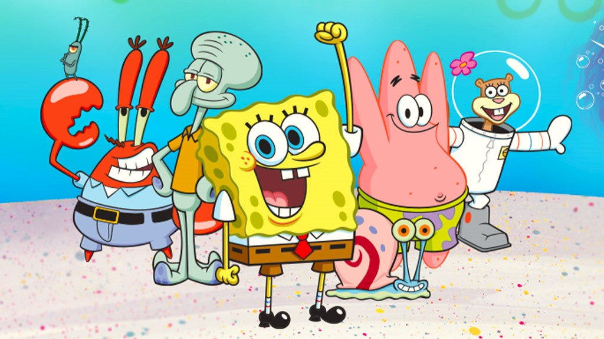

About SpongeBob
SpongeBob SquarePants lives in a pineapple under the sea in the town of Bikini Bottom. SpongeBob is an optimistic and enthusiastic sea sponge who works as a fry cook at the Krusty Krab. He loves jellyfishing, blowing bubbles, and hanging out with his best friend, Patrick Star.
SpongeBob and his friends
Characteristics
- He is enthusiastic and optimistic
- Talks really loud
- Knows the secret recipe for the Krabby Patty
- Loves jellyfishing and blowing bubbles
SpongeBob's friends
SpongeBob has many friends in Bikini Bottom. His best friend is Patrick Star, a starfish. He also has a close friendship with Sandy Cheeks, a squirrel from Texas. Other friends include his co-worker Squidward Tentacles, and his boss Mr. Krabs. Click on the link below to read more about them: